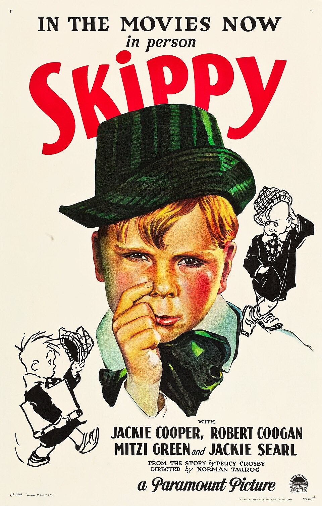

Skippy
4th Academy Awards
(Oscars 1931)
4 Nominations, 1 Award
| Nominations | ||
|---|---|---|
| Category | Nominees | Result |
| Outstanding Production | Paramount Publix | Nominated |
| Actor | Jackie Cooper | Nominated |
| Directing | Norman Taurog | Won |
| Writing (Adaptation) | Joseph L. Mankiewicz and Sam Mintz | Nominated |